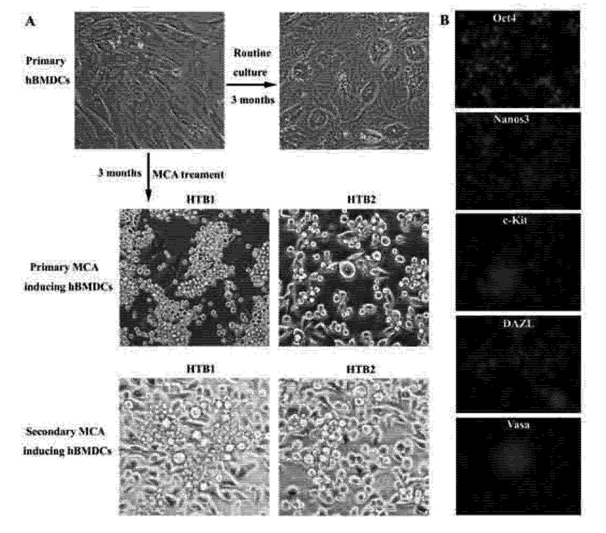
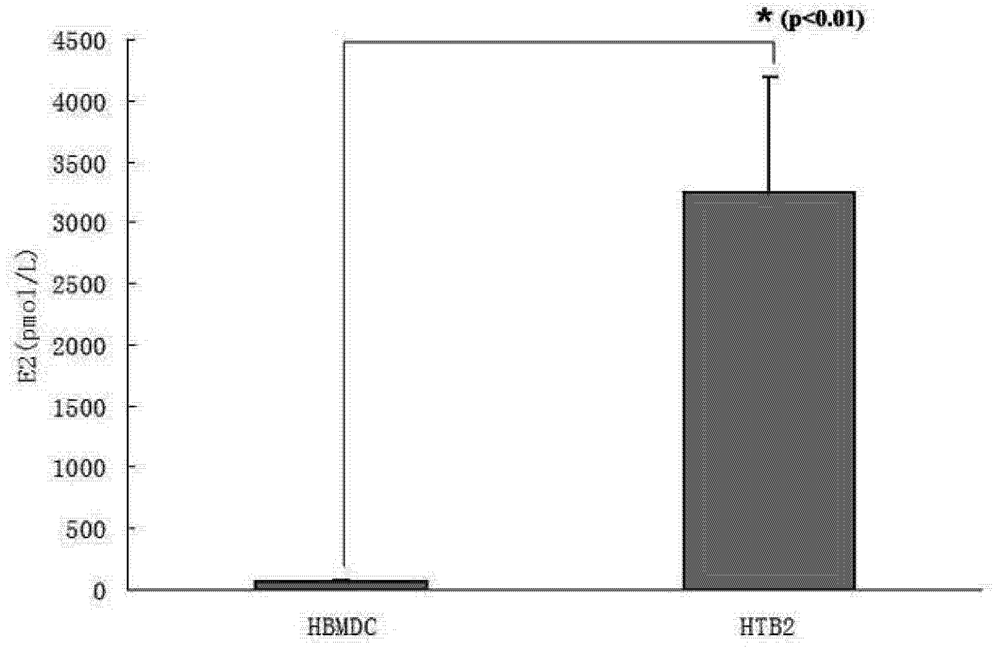
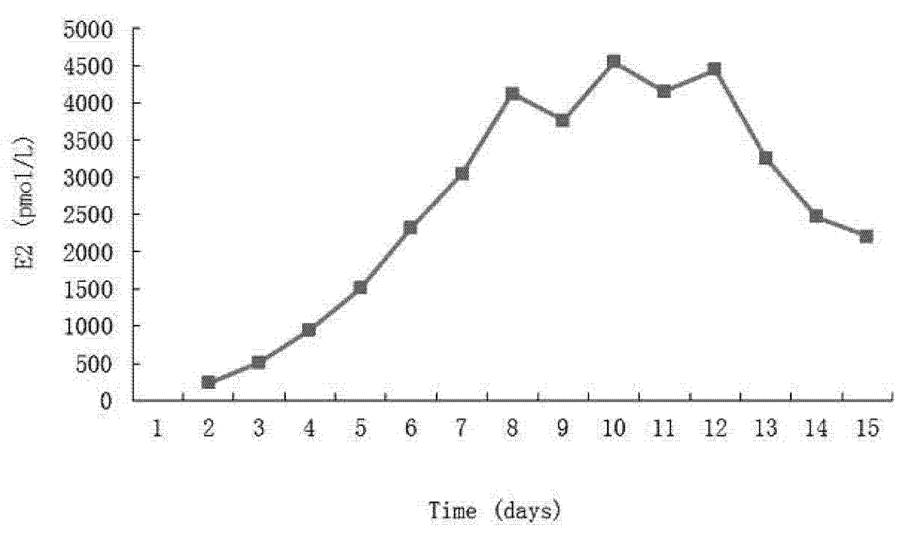
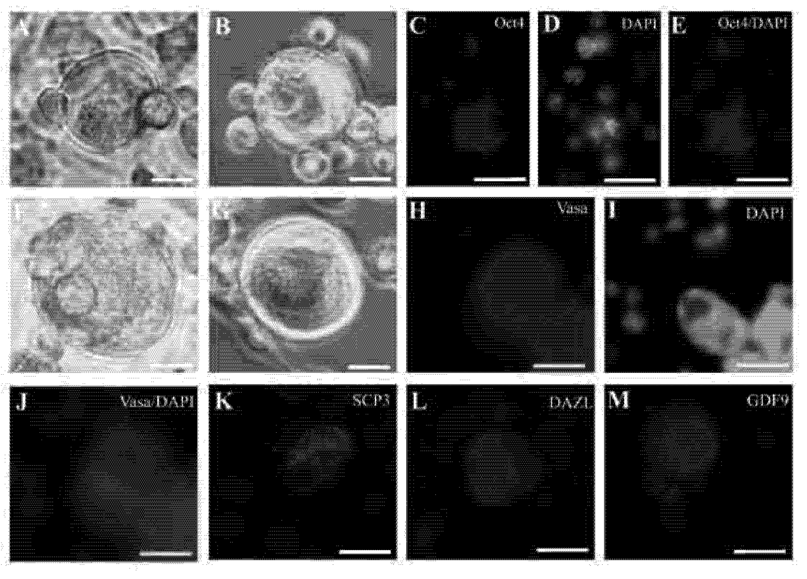
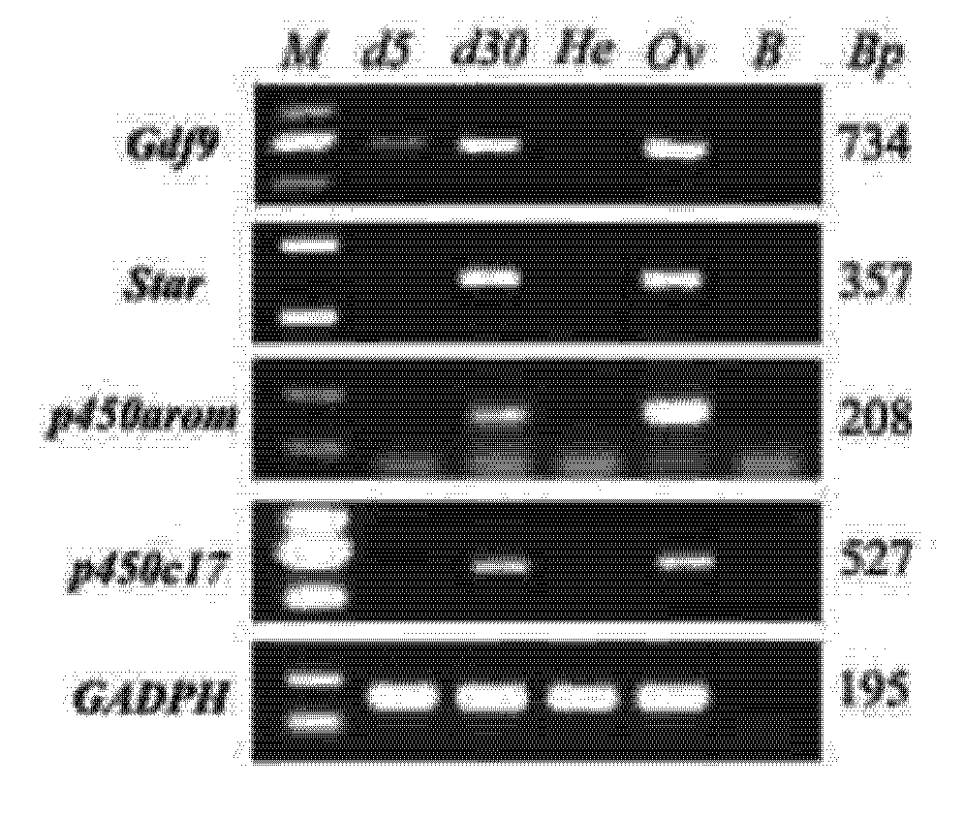
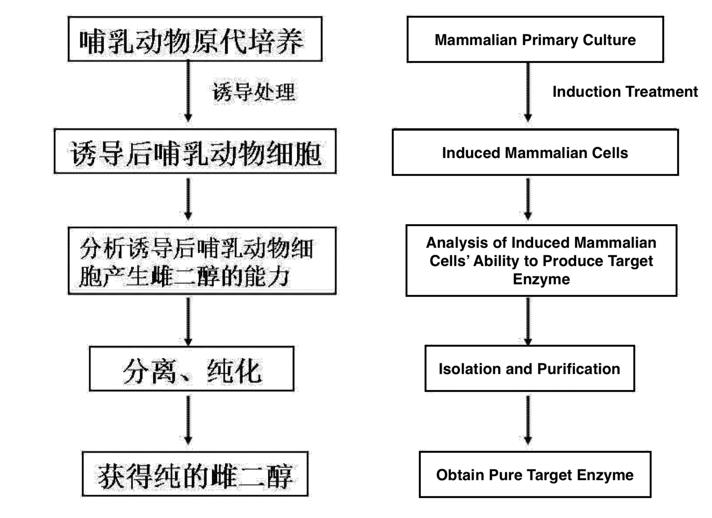

This post is a translation of patent #CN104293873A [pdf], registered in China.
The translation was done by alix, with some help of DeepSeek, and published 2025.03.27.
What follows below is directly the translated content.
People’s Republic of China National Intellectual Property Administration
Invention Patent Application
Publication Number: CN 104293873 A
Publication Date: January 21, 2015
Application Number: 201310297273.2
Application Date: July 16, 2013
Applicant: Huashan Hospital Affiliated to
Fudan University
Address: No. 12, Middle Wulumuqi Road, Jing’an
District, Shanghai 200031
Inventors: Liu Chunfang, Lü Yuan, Ma Zhan
Patent Agency: Shanghai Yuan Yi Cheng
Intellectual Property Agency (General
Partnership) 31268
Agent: Wu Guiqin
International Classification:
C12P 33/00 (2006.01)
Claims: 1 page
Description: 5 pages
Drawings: 4 pages
Invention Title:
A Method for Preparing Estradiol
Abstract:
The invention belongs to the field of biological
cell engineering and relates to a method for
preparing estradiol, specifically involving the
use of induced mammalian cells cultured in vitro
to produce estradiol. The method employs a cell
population derived from mammalian cells through
special induction in vitro, which, under
specific culture conditions, continuously
secretes estrogen. The system simulates the
natural biosynthesis process in vivo, resulting
in fewer by-products, simplicity, mild
conditions, and minimal environmental harm.
Compared to existing preparation methods, it
offers irreplaceable advantages. The invention
provides a novel pathway for obtaining estradiol
by enabling somatic cells of mammals to produce
estradiol after induction under specific
conditions in vitro.
[0001] The invention pertains to biological cell engineering and provides a method for preparing estradiol using induced mammalian cells cultured in vitro.
[0002] The prior art discloses that there are three main physiologically existing estrogens in the human body: estradiol, estrone, and estriol. These are primarily generated by the ovaries, follicles, corpus luteum, and placental tissue during pregnancy, and are of great significance for maintaining female secondary sexual characteristics. Estrogen deficiency can lead to functional decline in multiple organs of the female body. Data shows that when women enter menopause, estrogen levels drop sharply. In the United States alone, the market value of estrogen replacement drugs for menopausal women has reached nearly 20 billion US dollars.
[0003] Currently, the most commonly used drugs for estrogen supplementation fall into two categories: one being estrone derived from horse urine, and the other being chemically synthesized estradiol. Equine-derived estrone was the earliest estrogen replacement therapy and has been widely used worldwide for decades, becoming virtually synonymous with estrogen itself. Its preparation and purification methods are now quite mature. However, research shows that the estrogen actually needed by the human body is estradiol, while the estrogen components in pregnant mare’s urine mainly consist of estrone, equilin, and equilenin. The mentioned estrone is a metabolite of estradiol, with biological activity less than one-tenth that of estradiol, and carries toxic side effects including increased cardiovascular disease risk, liver damage, and breast cancer. Due to these significant adverse effects, estrone is commonly regarded as a “bad estrogen.”
[0004] Estradiol is primarily sourced from chemical synthesis. However, chemically synthesized estradiol presents problems including lengthy synthetic pathways, numerous byproducts, and environmental pollution. The ecological issues caused by estrogen analogs discharged into the environment have become increasingly concerning. As steroid hormones, estrogens differ from protein hormones in that they cannot be produced through the conventional bioengineering pathway of “DNA→mRNA→protein”, and can only be synthesized intracellularly using cholesterol as a substrate through enzymatic systems.
Under physiological conditions, estrogens mainly originate from theca cells and granulosa cells of ovarian follicles. During follicular development, luteinizing hormone (LH) first stimulates theca cells to secrete testosterone, which is then converted to estradiol by granulosa cells under the stimulation of follicle-stimulating hormone (FSH), and further metabolized into other estrogen components. Estrogen production involves coordinated actions among multiple cell types and hormones. Due to the extremely complex regulatory networks between various cells and hormones, cell engineering approaches for estrogen production face significant difficulties. To date, there have been no reports on successful cell engineering-based preparation of estrogens.
[0005] The inventors of this application intend to provide a method for preparing estradiol through genetic engineering or cell engineering.
[0006] References related to the present invention:
[0007] The objective of the present invention is to overcome the deficiencies and shortcomings of existing technologies by providing a method for preparing estradiol. Specifically, the invention relates to a method for preparing estradiol through genetic engineering or cell engineering, with particular emphasis on the use of induced mammalian cells cultured in vitro to produce estradiol. This method establishes an in vitro cell engineering system utilizing induced mammalian cells for the preparation of estradiol.
[0008] In the method described in the present invention, the cell population used is derived from mammalian cells through special induction methods, including compound treatment, gene introduction, natural substance induction, viral infection, radiation induction, and long-term in vitro culture. These methods induce the in vitro cultured mammalian cells to acquire the ability to produce estradiol. Since the secretion of estradiol in this system simulates the biosynthetic process in vivo, the resulting estrogen exhibits complete species homology with the original cells. The production of estradiol generates few byproducts under mild conditions and poses almost no harm to the environment.
[0009] Specifically, the method for preparing estradiol according to the present invention is characterized by comprising the following steps:
[0010] More specifically, the method for preparing estradiol according to the present invention is characterized by comprising the following steps:
Isolated mammalian cells are subjected to primary culture preparation using existing techniques. The prepared cells are cultured in DMEM medium containing 15% fetal bovine serum under conditions of 37°C and 5% CO₂ until reaching 10⁵ cells per culture flask.
MCA is added to the culture medium at a final concentration of 1 μg/mL, and the MCA-containing medium is replaced twice weekly. After 1 week of MCA treatment, the cells are maintained under standard culture conditions at 37°C and 5% CO₂.
After culturing for 3 months, germ cell-like cells are observed in the culture. These germ cell-like cells express germ cell markers: Oct4, Nanos3, c-Kit, DAZL, and Vasa.
In the present invention, sustained expression of estradiol is detected in the culture medium. Compared to untreated hBMDCs (E2 = 65 ± 14.8 pmol/L, n=6), MCA-induced hBMDCs (E2 = 3243 ± 947 pmol/L, n = 6) exhibit a 50-fold increase in estradiol concentration (p < 0.01), demonstrating significant differences. After subculture, estradiol concentration progressively increases with prolonged culture time, peaking at approximately 10 days (up to 4500 pmol/L), then gradually decreasing while maintaining relatively high levels.
In vivo, estradiol is synthesized by ovarian follicles. In the present invention, follicle-like structures are observed in MCA-induced hBMDCs cultured in vitro. Oocyte development requires estradiol stimulation—without sufficient estradiol, oocytes can only grow to a maximum of 25 μm. In contrast, oocyte-like cells in MCA-induced hBMDCs reach 40–50 μm in size, and immunofluorescence confirms these large cells as oocytes.
The present invention involves follicle-related genes, including key estradiol synthesis genes (STAR, p450arom, p450c17) and follicle development-related gene (GDF9), which are expressed in the culture.
By optimizing culture conditions, the invention enhances estradiol production capacity while reducing serum concentration in the medium. These germ cell-like cells further develop into early follicle-like structures and oocyte-like cells.
The estradiol is isolated and purified using existing methods.
[0011] In the present invention, said cell lines can be prepared by inducing transformation of normal mammalian cells through methods including chemical induction, natural substance treatment, gene introduction, radiation induction, viral induction, or long-term passaging. The induced cells, when cultured under high cell density conditions, can spontaneously proliferate and differentiate into cell populations including pluripotent stem cell-like cells, granulosa cell-like cells, primordial germ cell-like cells, and oocyte-like cells. Continued culture of these cells can further self-organize to form follicle-like structures, with the produced estrogen secreted into the culture medium, which can then be enriched and purified using existing techniques to obtain estradiol.
[0012] The advantages of the
method of the present invention include:
The invention prepares estradiol through cell
engineering means, wherein the employed cell
population is generated by special in vitro
induction of mammalian cells. Said cell
population can be cultured under specific in
vitro conditions to continuously secrete
estrogen. The estrogen secretion in this system
completely simulates the biosynthetic process in
vivo, with few byproducts generated during
estradiol production, simple methodology, and
mild conditions that pose minimal environmental
harm. Compared with existing preparation
methods, it possesses irreplaceable
advantages.
[0013] The cell engineering method for estrogen production of the present invention enables mammalian somatic cells to acquire estradiol-producing capability after special in vitro induction conditions, providing a novel pathway for obtaining estradiol.
 [0014] Figure 1 shows germ cell-like cells produced by MCA-induced hBMDCs, wherein: A: Germ cell-like cells appear in hBMDCs after MCA induction; B: The germ cell-like cells express germ cell-related proteins: Oct4, Nanos3, c-Kit, DAZL, Vasa.  [0015] Figure 2 demonstrates changes in estradiol concentration before and after induction. Compared to untreated hBMDCs (E2 = 65 ± 14.8 pmol/L, n = 6), MCA-induced hBMDCs (E2 = 3243 ± 947 pmol/L, n = 6) show estradiol concentrations up to 50 times higher (p < 0.01).

[0016] Figure 3 shows the
estradiol concentration curve in the culture.
After MCA induction, estradiol (E2) appears in
the supernatant of cultured hBMDCs. During the
initial subculture phase, estradiol
progressively increases with culture time before
gradually decreasing.

[0017] Figure 4 shows early
follicle-like structures and oocyte-like cells
in MCA-induced hBMDCs, wherein:
(A-B) Early follicle-like structures;
(C-D) In early follicle-like structures, larger
cells express the germ cell marker Oct4 while
surrounding cells do not;
(E-G) Oocyte-like cells;
(H-M) Oocyte-like cells express oocyte-related
markers: Vasa, SCP3, DAZL, GDF9; Scale bar: 20
μm.
 [0018] Figure 5 shows follicle-related genes expressed in induced cells, including key estradiol synthesis genes (STAR, p450arom, p450c17) and follicle development-related gene GDF9 expressed in the culture.  [0019] Figure 6 shows the flowchart of the preparation method described in the present invention.
[0020]
[0021] The implementation process of the present invention will be illustrated by the following non-limiting examples.
[0022] Example 1
Human bone marrow-derived cells were induced using the compound 3-methylcholanthrene (MCA) to generate and screen the cells described in the present invention. These cells were used to synthesize estradiol in vitro. The cells have been deposited at the China Center for Type Culture Collection under accession number CCTCC C2012173.
Preparation steps:
[0023] Example 2
Mouse bone marrow-derived cells (mBMDCs) were induced through long-term in vitro culture to generate and screen the cells described in the present invention. These cells were used to synthesize estradiol in vitro.
Specific steps:
[0024] Example 3
Mouse embryonic fibroblasts were induced by introducing pluripotency genes (Oct4, Sox2, Nanog, c-KIT) in vitro to generate and screen the cells described in the present invention. These cells were used to synthesize estradiol in vitro.
Steps:
[0025] Example 4 Porcine embryonic skin cells were induced by X-ray irradiation to generate and screen the cells described in the present invention. These cells were used to synthesize estradiol in vitro.
Steps:
[0026] Example 5
Rat embryonic stem cells were induced to differentiate, generating and screening the cells described in the present invention. These cells were used to synthesize estradiol in vitro.
Steps:
DMEM (Dulbecco’s Modified Eagle Medium): A widely used cell culture medium for mammalian cells, containing amino acids, glucose, vitamins, and salts.↩︎
MCA (3-Methylcholanthrene): A polycyclic aromatic hydrocarbon and potent carcinogen often used in research to induce cell transformation or differentiation. Here it acts as an inducer to reprogram mammalian cells (e.g., hBMDCs) into germ cell-like cells.↩︎
hBMDCs: Human bone marrow-derived cells are a pool of pluripotent stem and progenitor cells that include, among others, hematopoietic stem cells, mesenchymal stromal cells, and endothelial progenitor cells which secrete a variety of growth factors, cytokines, exosomes, and microvesicles. See doi: 10.1007/s00441-007-0509-0, and wikipedia.↩︎
Serial passage:
Cells are split and transferred to fresh medium at 70–80% confluence (typically every 3-7 days).
“Split and Transfer” Steps: